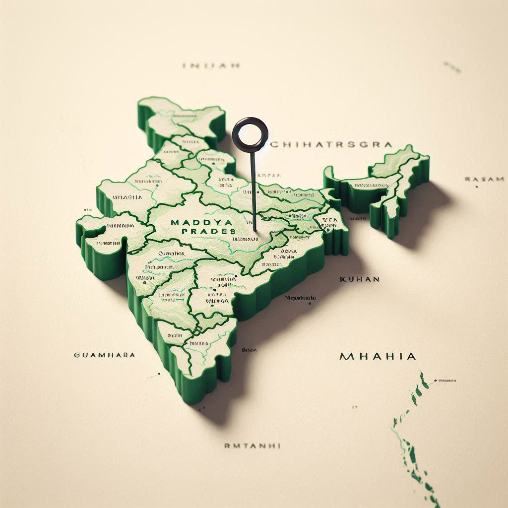
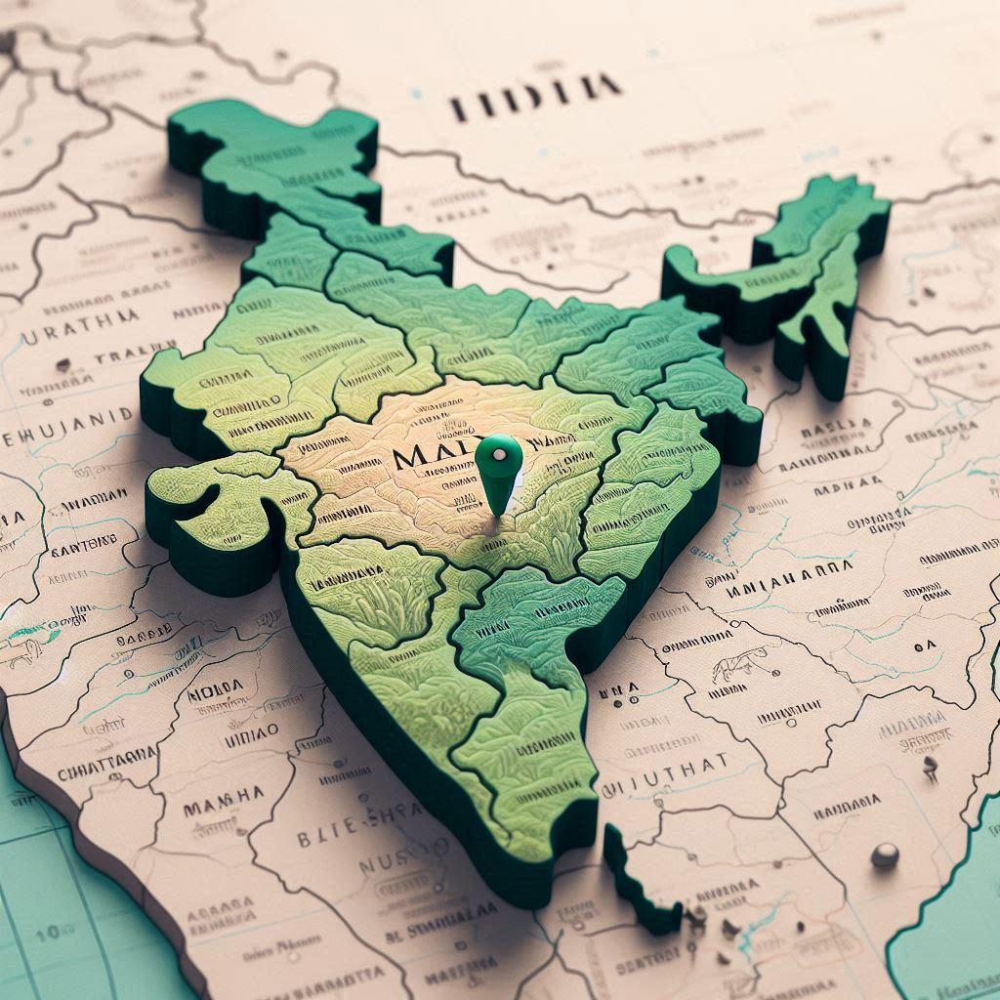

Geographical Location of Madhya Pradesh
Madhya Pradesh, often referred to as the "Heart of India," is located in the central region of India. It is bordered by several states, making it a strategic and central part of the country. Here’s an overview of its geographical location:
- North: Madhya Pradesh is bordered by Uttar Pradesh.
- East: It is bordered by the state of Chhattisgarh.
- South: Maharashtra lies to the south of Madhya Pradesh.
- West: The state of Rajasthan is located to the west of Madhya Pradesh.
- Central: The state is positioned centrally in India, making it a crucial part of the country's landmass.
Coordinates:
- Latitude: Approximately between 21°30' N to 26°30' N
- Longitude: Approximately between 74°00' E to 82°45' E
Topography:
- Madhya Pradesh is characterized by a diverse landscape that includes fertile plains, dense forests, plateaus, and mountains. The central part of the state is a large plateau, known as the Malwa Plateau.
- Vindhya Range: Runs along the northern edge of the state, dividing it from northern India.
- Satpura Range: Forms another major mountain range to the south.
- Rivers: The Narmada, Mahi, Tungabhadra, and Shipra rivers are some of the prominent water sources flowing through the state.
Climate:
Madhya Pradesh experiences a tropical climate with distinct seasons: hot summers, monsoon rains, and relatively cooler winters. The weather can be quite hot in the summer, with temperatures often reaching 45°C (113°F), while winters are much cooler, especially in the northern and central regions. The monsoon season brings significant rainfall from June to September.
Geographical Features of Madhya Pradesh (Continued)
Madhya Pradesh’s geographical diversity is what makes it unique and significant in India. The state is endowed with various physical features that play a major role in its ecology, agriculture, and economy.


Rivers:
- Narmada River: Flowing from east to west, it is the most important river in Madhya Pradesh, providing water for irrigation and contributing to the development of hydroelectric power. The Narmada Valley is known for its scenic beauty and historical significance.
- Tungabhadra River: Originating in the Satpura Range, this river contributes to the state’s water resources, especially in the southeastern part of the state.
- Mahi River: The Mahi River flows from the northern part of Madhya Pradesh towards the southeastern regions, supporting irrigation and local water systems.
- Shipra River: Known for its religious importance, particularly around the city of Ujjain, which is one of the four places of the Kumbh Mela.
Forest and Wildlife:
- Kanha National Park: Famous for its population of tigers, it is one of the largest national parks in the state and a prominent tourist destination.
- Bandhavgarh National Park: Known for its high tiger density, it is another significant wildlife sanctuary that attracts wildlife enthusiasts and photographers.
- Pench National Park: Known for its rich fauna and flora, the park is famous as the setting for Rudyard Kipling’s *The Jungle Book*.
- Satpura Tiger Reserve: Located in the Satpura Mountain Range, this park is known for its scenic beauty and rich wildlife.
Mountain Ranges:
- Vindhya Range: This range runs across the northern part of the state, extending into Rajasthan. It separates the northern plains from the Deccan Plateau.
- Satpura Range: Located in the southern part of the state, the Satpura Range forms a natural divide between the northern and southern parts of Madhya Pradesh and is home to diverse flora and fauna.
Plateaus:
- Malwa Plateau: This plateau, located in the central part of the state, is one of the most important agricultural zones in Madhya Pradesh. The fertile land here supports the growth of a variety of crops.
- Chotanagpur Plateau: In the southeastern region of the state, it is characterized by rocky terrain and is rich in minerals.
Climate Zones:
- Tropical Wet and Dry Climate: The central and southern parts of the state experience a tropical wet and dry climate. This climate is conducive to the growth of crops like cotton, soybean, and groundnuts.
- Subtropical Climate: The areas near the Vindhya Range and the northern parts of Madhya Pradesh experience a more temperate climate.
Agriculture:
- Cereals: Wheat, rice, maize, and barley are major crops grown in the state.
- Pulses: Madhya Pradesh is a leading producer of pulses, especially gram (chickpeas).
- Oilseeds: The state is also a leading producer of soybean and mustard.
- Fruits: Mangoes, guavas, and tamarinds are grown in abundance, especially in the Malwa region.
Economic Geography:
- Minerals: Madhya Pradesh is rich in mineral resources, including coal, limestone, and bauxite. The state has a significant mining industry, especially in the regions of Singrauli, Jabalpur, and Chhindwara.
- Forests and Timber: The forests of Madhya Pradesh are a key resource for timber and non-timber products, providing raw materials for industries.
Tourism and Scenic Spots:
Apart from the natural beauty, Madhya Pradesh is also home to a rich cultural heritage with ancient temples, historical forts, and scenic landscapes. Popular tourist destinations include:
- Khajuraho: Known for its UNESCO World Heritage temples with intricate sculptures and architecture.
- Sanchi Stupa: A major Buddhist site and a UNESCO World Heritage Site.
- Ujjain: Famous for the Mahakaleshwar Temple and the Kumbh Mela festival.